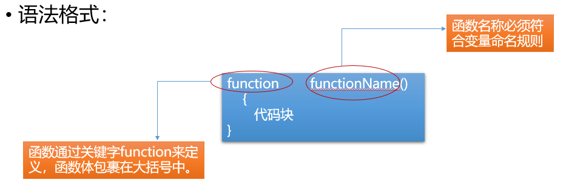
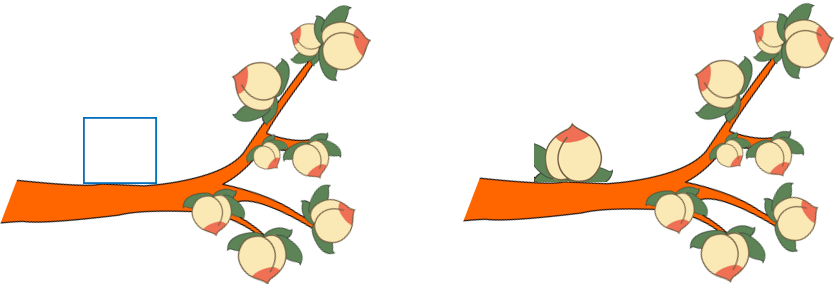

一、流程控制1. 作用2. 分类1）顺序结构2）分支/选择结构1. if语句2. switch语句3）循环结构二、函数1. 作用 2. 语法 3. 使用 4. 匿名函数5. 作用域6. 获取多个DOM元素和控制属性
一、流程控制
1. 作用
控制代码的执行顺序
2. 分类
1）顺序结构
从上到下依次执行代码语句
2）分支/选择结构
1. if语句
简单if结构
xxxxxxxxxxif(条件表达式){表达式成立时执行的代码段}注意 : 除零值以外，其他值都为真，以下条件为假值false
xxxxxxxxxxif(0){}if(0.0){}if(""){} //空字符串if(undefined){}if(NaN){}if(null){}特殊写法 : { }可以省略,一旦省略，if语句只控制其后的第一行代码
if - else结构
xxxxxxxxxxif(条件表达式){//条件成立时执行}else{//条件不成立时选择执行}多重分支结构
xxxxxxxxxxif(条件1){//条件1成立时执行}else if(条件2){//条件2成立时执行}else if(条件3){//条件3成立时执行}else{//条件不成立时执行}

2. switch语句
- 语法 :
xxxxxxxxxxswitch(value){ case 值1 : //value与值1匹配全等时,执行的代码段 break; //结束匹配 case 值2 : //value与值2匹配全等时,执行的代码段 break; case 值3 : //value与值3匹配全等时,执行的代码段 break; default: //所有case匹配失败后默认执行的语句 break;}- 使用 :
xxxxxxxxxx1. switch语句用于值的匹配，case用于列出所有可能的值；只有switch()表达式的值与case的值匹配全等时，才会执行case对应的代码段2. break用于结束匹配，不再向后执行；可以省略，break一旦省略，会从当前匹配到的case开始，向后执行所有的代码语句，直至结束或碰到break跳出3. default用来表示所有case都匹配失败的情况，一般写在末尾，做默认操作4. 多个case共用代码段 case 值1: case 值2: case 值3: //以上任意一个值匹配全等都会执行的代码段
3）循环结构
- 作用 根据条件，重复执行某段代码
- 分类
- while循环
xxxxxxxxxx定义循环变量; while(循环条件){ 条件满足时执行的代码段 更新循环变量;}- do-while循环
xxxxxxxxxxdo{ 循环体; 更新循环变量}while(循环条件);
与 while 循环的区别 :
- while 循环先判断循环条件，条件成立才执行循环体
- do-while 循环不管条件是否成立，先执行一次循环体
- for 循环
xxxxxxxxxxfor(定义循环变量;循环条件;更新循环变量){ 循环体;}
循环控制 :
- break 强制结束循环
- continue 结束当次循环，开始下一次循环 循环嵌套 : 在循环中嵌套添加其他循环

二、函数

1. 作用
封装一段待执行的代码
2. 语法
xxxxxxxxxx //函数声明 function 函数名(参数列表){ 函数体 return 返回值; } //函数调用 函数名(参数列表);
3. 使用
函数名自定义，见名知意，命名规范参照变量的命名规范。普通函数以小写字母开头，用于区分构造函数(构造函数使用大写字母开头，定义类)

4. 匿名函数
匿名函数：省略函数名的函数。语法为：
- 匿名函数自执行
xxxxxxxxxx (function (形参){ })(实参);- 定义变量接收匿名函数
xxxxxxxxxx var fn = function (){}; fn(); //函数调用
5. 作用域
JavaScript 中作用域分为全局作用域和函数作用域，以函数的{ }作为划分作用域的依据
全局变量和全局函数
- 只要在函数外部使用 var 关键字定义的变量，或函数都是全局变量和全局函数，在任何地方都可以访问
- 所有省略 var 关键字定义的变量，一律是全局变量
局部变量/局部函数
- 在函数内部使用 var 关键字定义的变量为局部变量，函数内部定义的函数也为局部函数，只能在当前作用域中使用，外界无法访问
作用域链 局部作用域中访问变量或函数，首先从当前作用域中查找，当前作用域中没有的话，向上级作用域中查找，直至全局作用域

6. 获取多个DOM元素和控制属性
- 根据标签名获取元素节点列表
xxxxxxxxxxvar elems = document.getElementsByTagName("");/*参数 : 标签名返回值 : 节点列表,需要从节点列表中获取具体的元素节点对象,添加相应下标。*/- 根据 class 属性值获取元素节点列表
xxxxxxxxxxvar elems = document.getElementsByClassName("");/*参数 : 类名(class属性值)返回值 : 节点列表*/- 元素节点对象提供了以下属性来操作元素内容
xxxxxxxxxxinnerHTML : 读取或设置元素文本内容,可识别标签语法innerText : 设置元素文本内容,不能识别标签语法value : 读取或设置表单控件的值- 获取 DOM 树中的属性值

- 设置 DOM 树中的属性值：

elem.getAttribute("attrname");//根据指定的属性名返回对应属性值elem.setAttribute("attrname","value");//为元素添加属性,参数为属性名和属性值elem.removeAttribute("attrname");//移除指定属性